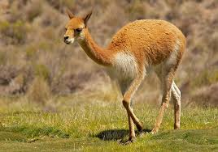
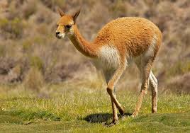
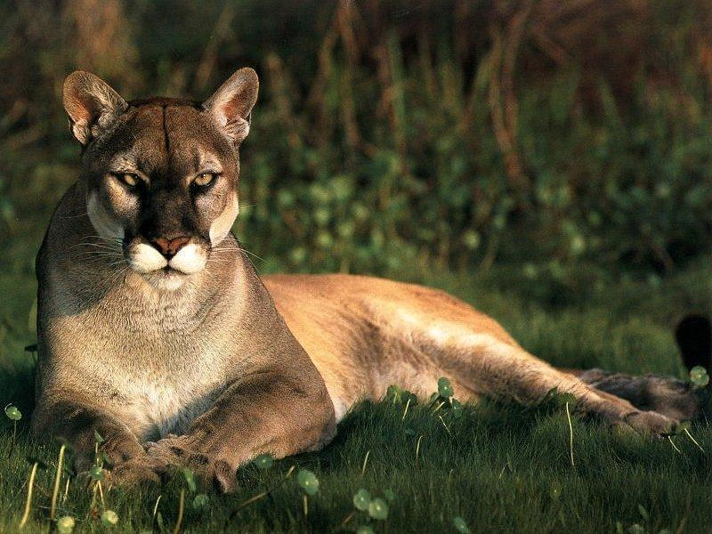

El puma es altamente adaptable y se encuentra en una amplia gama de hábitats, desde el desierto árido hasta la selva tropical y el frío bosque de coníferas, desde el nivel del mar hasta los 5.800 metros en los Andes. Los estudios han demostrado que se prefiere el hábitat con vegetación de sotobosque denso, pero estos gatos también pueden vivir en áreas abiertas con una cubierta vegetal escasa. Aunque terrestres, los pumas pueden nadar y trepar a los árboles cuando lo necesitan.
Los pumas son gatos solitarios, con la excepción de asociaciones de uno a seis días durante los períodos de apareamiento y contacto entre las hembras y sus crías. Los machos ocupan grandes territorios que se superponen con los de varias hembras; los límites del territorio están marcados por rasguños que quedan en posiciones destacadas. Las mujeres anuncian su receptividad al apareamiento con gritos fuertes. El apareamiento ocurre durante todo el año, pero se concentra de diciembre a marzo en latitudes septentrionales. La hembra da a luz a su camada de entre uno y seis gatitos dentro de una guarida; los gatitos son inicialmente ciegos e indefensos, permanecen en la guarida mientras su madre busca comida. Alrededor de los dos meses de edad pueden acompañar a su madre en las incursiones de caza y permanecer con ella hasta alrededor de 1,5 a 2 años.
Los pumas son principalmente nocturnos y crepusculares, siendo más activos al amanecer y al anochecer, y rara vez emergen en el día. Estos gatos ágiles pero poderosos cazan acechando y emboscando a su presa. Los pumas se alimentan predominantemente de ungulados, pero se sabe que ocasionalmente capturan presas más pequeñas. En las áreas del norte de su área de distribución, se alimentan principalmente de ungulados grandes, incluidos alces y ocasionalmente de ganado doméstico, mientras que en las zonas tropicales su dieta parece consistir en presas más medianas.
El puma se clasifica como de Preocupación Menor (LC) en la Lista Roja de la UICN y se incluye en el Apéndice II de la CITES.
A través de su rango, los pumas han sido considerados una amenaza para el ganado y perseguidos por esto. De hecho, el Servicio de Pesca y Vida Silvestre de EE. UU. Estima que un mínimo de 66.665 pumas fueron asesinados entre 1907 y 1978. Además, los pumas son uno de los pocos depredadores grandes en América del Norte que es legal para cazar y perseguir perros. Esta especie es particularmente vulnerable porque lleva a los árboles cuando es cazada, quedando efectivamente atrapada. Los pumas también se consideran un peligro potencial para los humanos, especialmente para los niños, aunque los pumas casi nunca atacan a las personas. Con las personas que se establecen en áreas más remotas y con la protección legal del gato, surge el potencial de conflicto entre humanos y pumas, y existe la preocupación de que los pumas perderán el miedo a estar cerca de los humanos. En California y Florida, muchos animales mueren a manos de los vehículos, ya que los caminos muy transitados dividen las poblaciones e incluso los rangos de hogar de los pumas individuales. La pérdida y fragmentación del hábitat también representa una amenaza significativa para la supervivencia futura del puma, lo que resulta en el grave problema de la diversidad genética asociada a la endogamia, que a su vez reduce la resistencia a enfermedades o cambios ambientales y afecta negativamente la fertilidad.